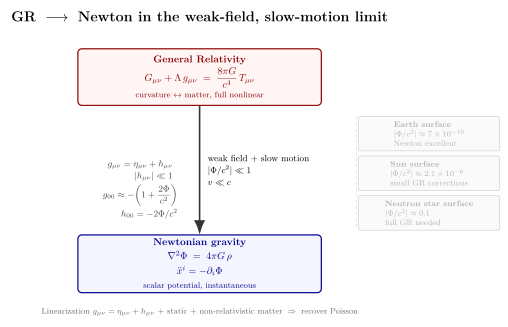

Newton 引力是怎么从 GR 里浮现的?
上一节我们解出了 Schwarzschild 度规 — 球对称真空里时空的精确长相. 那个解里有个隐隐让人不安的地方: 在远离质量源的地方 ($r\gg r_s$), Schwarzschild 时空看起来非常接近 Minkowski 平直时空, 唯一的修正集中在 $g_{tt}=-(1-2GM/rc^2)$ 与 $g_{rr}=(1-2GM/rc^2)^{-1}$ 上, 都是 $\Phi/c^2$ 的小量. 这是不是巧合? 不是. 它正是 GR 在弱场极限退化为 Newton 万有引力的必然表现. 这件事不是 Einstein 凑出来的, 而是从测地线方程与场方程自动掉出来. 这一节我们把它写得显式一些, 同时算几个有代表性的弱场参数, 让"$\Phi/c^2$ 多小才算弱场"这个问题落到具体数字.
一、为什么必须有 Newton 极限?
1687 年 Newton 在《原理》里写下 $F=GMm/r^2$, 之后两百多年里这个公式精确预测了行星轨道、潮汐、双星运动 — 它的精度是被天文观测一遍遍校验过的. 要在 1915 年用一个全新的几何理论取代 Newton, 必须先满足一个底线: 当引力很弱、运动很慢的时候, 新理论必须"长得跟 Newton 一模一样". 不然就解释不了"苹果为什么落下来"这个一年级问题.
用现代语言说, 这是一个极限对应 (correspondence principle): 把无穷小宇宙学常数 $\Lambda\to 0$ 与无穷小弱场参数 $\Phi/c^2\to 0$ 同时取掉, GR 应该回到 Newton 的引力势 $\Phi$ 满足 Poisson 方程, 试探粒子按 $-\nabla\Phi$ 加速. 这个要求, Einstein 在 1916 年那篇综述论文里专门写过一节 ("Newton 引力作为一阶近似"), 用它倒推出场方程的耦合常数为什么是 $8\pi G/c^4$ 而不是别的什么数字. 我们这一节就把那个倒推走一遍.
第一性的设定是这样的: 在没有引力的极限, 时空就是 Minkowski 的 $\eta_{\mu\nu}=\mathrm{diag}(-1,+1,+1,+1)$ (我们用 $c=1$ 之外的 SI 单位, 显式留 $c$); 真有了一点弱引力, 度规会偏离 $\eta$ 一个小量:
$$ g_{\mu\nu}=\eta_{\mu\nu}+h_{\mu\nu},\qquad |h_{\mu\nu}|\ll 1. $$
$h_{\mu\nu}$ 就是引力扰动, 它把"几何"翻译成一个张量场住在平直背景上. 后面我们要从测地线方程与场方程两边夹击, 把 $h_{00}$ 直接认成 $-2\Phi/c^2$.
二、测地线方程的低阶展开 — $g_{00}$ 怎么"知道"Newton 势
试探粒子在弯曲时空里走测地线:
$$ \frac{\mathrm d^2 x^\mu}{\mathrm d\tau^2}+\Gamma^\mu_{\alpha\beta}\frac{\mathrm dx^\alpha}{\mathrm d\tau}\frac{\mathrm dx^\beta}{\mathrm d\tau}=0. $$
慢速极限 $v\ll c$ 意味着 $\mathrm dx^i/\mathrm d\tau\ll c\,\mathrm dt/\mathrm d\tau$, 所以四速度的空间分量比时间分量小得多. 把求和里只剩下 $\alpha=\beta=0$ 的那一项:
$$ \frac{\mathrm d^2 x^\mu}{\mathrm d\tau^2}\approx -\Gamma^\mu_{00}\,c^2\Bigl(\frac{\mathrm dt}{\mathrm d\tau}\Bigr)^2. $$
再考虑静态弱场: 度规与时间无关, $\partial_t h_{\mu\nu}=0$. Christoffel 符号
$$ \Gamma^\mu_{00}=\tfrac{1}{2}g^{\mu\lambda}(\partial_0 g_{\lambda 0}+\partial_0 g_{0\lambda}-\partial_\lambda g_{00}) $$
里, 前两项因 $\partial_t=0$ 消失, 只剩 $\Gamma^\mu_{00}=-\tfrac{1}{2}g^{\mu\lambda}\partial_\lambda g_{00}$. 在最低阶 $g^{\mu\lambda}\approx \eta^{\mu\lambda}$, 把空间分量挑出来:
$$ \Gamma^i_{00}\approx -\tfrac12 \eta^{ij}\partial_j h_{00}=-\tfrac12 \partial_i h_{00}. $$
慢速近似下 $\mathrm dt/\mathrm d\tau\approx 1$, 所以测地线方程的空间分量是
$$ \frac{\mathrm d^2 x^i}{\mathrm dt^2}\approx \tfrac12 c^2\,\partial_i h_{00}. $$
对照 Newton 第二律 $\ddot{x}^i=-\partial_i\Phi$, 我们必须要求
$$ h_{00}=-\frac{2\Phi}{c^2}\;\Longrightarrow\;g_{00}\approx -\Bigl(1+\frac{2\Phi}{c^2}\Bigr). \tag{1} $$
这就是本节的第一条主结论. 它告诉我们: 引力势 $\Phi$ 不是凭空附加的概念, 它就是度规时间分量的小偏离. 第二节那个 Pound-Rebka 实验测的引力红移 $\Delta\nu/\nu=\Delta\Phi/c^2$, 第三节那个光偏折用 Einstein 1911 推导的 $g_{tt}=-(1+2\Phi/c^2)$, 全部是这一行的回响. 站在 GR 的视角看, Newton 的"引力势"只是一个特定坐标下度规分量的别名.
把 Schwarzschild 度规的 $g_{tt}=-(1-2GM/rc^2)$ 与 (1) 对照, 立刻读出 $\Phi=-GM/r$ — Newton 的点质量势精确地从 Schwarzschild 解里浮出来.
三、场方程的低阶展开 — Poisson 方程怎么浮出来
(1) 还只是测地线一边的故事. 我们要让 Einstein 场方程在弱场极限化简成 Newton 的 Poisson 方程
$$ \nabla^2\Phi=4\pi G\rho. \tag{2} $$
(2) 是这一节第二条主结论 — 它告诉物质 (密度 $\rho$) 怎么"产生"$\Phi$, 跟 (1) 配合形成完整的 Newton 力学. 我们要看的是 (2) 怎么从 $G_{\mu\nu}=8\pi G T_{\mu\nu}/c^4$ 在弱场+静态+非相对论物质的极限里掉出来.
非相对论物质的能动张量主导分量是 $T_{00}\approx \rho c^2$, 其余都是它的小量 (压强 $p\ll\rho c^2$, 流速 $v\ll c$). 取迹 $T=\eta^{\mu\nu}T_{\mu\nu}\approx -\rho c^2$. Einstein 场方程的等价形式 (用 Ricci 张量直接写) 是
$$ R_{\mu\nu}=\frac{8\pi G}{c^4}\Bigl(T_{\mu\nu}-\tfrac12 g_{\mu\nu}T\Bigr). $$
取 $\mu=\nu=0$, 右边
$$ T_{00}-\tfrac12 g_{00}T\approx \rho c^2 - \tfrac12(-1)(-\rho c^2)=\tfrac12\rho c^2, $$
所以 $R_{00}\approx 4\pi G\rho/c^2$.
左边 $R_{00}$ 在静态弱场里也很简单. 一般式 $R_{\mu\nu}=\partial_\lambda\Gamma^\lambda_{\mu\nu}-\partial_\nu\Gamma^\lambda_{\mu\lambda}+\Gamma\Gamma$. 静态 $\partial_t=0$, 第二项与 $\Gamma\Gamma$ 二阶项都可丢, 只剩
$$ R_{00}\approx \partial_i\Gamma^i_{00}\approx -\tfrac12 \partial_i\partial^i h_{00}=-\tfrac12 \nabla^2 h_{00}. $$
把 $h_{00}=-2\Phi/c^2$ 代进去, 左边变 $\nabla^2\Phi/c^2$. 两边相等:
$$ \frac{\nabla^2\Phi}{c^2}=\frac{4\pi G\rho}{c^2}\;\Longrightarrow\;\nabla^2\Phi=4\pi G\rho. $$
正是 (2). 这是个值得停下来体会的结果: Einstein 场方程的耦合常数 $8\pi G/c^4$ 之所以长这个样子, 完全是为了让上面这个化简最后跟 Newton 的 $4\pi G$ 系数对得上. 1916 年综述里的 $8\pi$ 不是 Einstein 凭审美选的, 是这个对应原理拉来的. 1917 年 Hendrik Lorentz 与 Tullio Levi-Civita 都各自验证过这个化简过程, Levi-Civita 当时还跟 Einstein 通过几封信讨论张量推导的细节 — 这是 GR 早年几位关键数学家把它从一个"猜想"打磨成一套自洽数学的过程.

四、几个有代表性的弱场参数
有了 (1) 和 (2), 自然要问: $|\Phi/c^2|$ 在不同环境下究竟多大? 这个数字直接告诉我们 Newton 极限在哪儿是好近似, 又在哪儿崩坏成完整 GR.
地球表面. $\Phi=-GM_\oplus/R_\oplus$, 代 $G=6.674\times 10^{-11}\,\mathrm{m^3 kg^{-1}s^{-2}}$, $M_\oplus=5.972\times 10^{24}\,\mathrm{kg}$, $R_\oplus=6.371\times 10^6\,\mathrm{m}$:
$$ \Bigl|\frac{\Phi}{c^2}\Bigr|=\frac{GM_\oplus}{R_\oplus c^2}=\frac{6.674\times 10^{-11}\times 5.972\times 10^{24}}{6.371\times 10^6\times (2.998\times 10^8)^2}\approx 6.95\times 10^{-10}. $$
这就是为什么 GPS 上每天会出现量级 $7\times 10^{-10}\times 86400\,\mathrm{s}\approx 60\,\mu\mathrm{s}$ 的引力时间膨胀效应 — 当然 GPS 卫星不在地表而在 ~20,200 km 高空, 真实修正还要算上轨道高度的差值 (我们留到第 27 节用 $\sim 38\,\mu\mathrm s/\text{day}$ 说). 关键观察: 在地球这种环境, $|\Phi/c^2|\sim 10^{-9}$ 远小于 1, Newton 力学几乎就是精确的; GR 的修正是十亿分之一量级.
太阳表面. $M_\odot=1.989\times 10^{30}\,\mathrm{kg}$, $R_\odot=6.96\times 10^8\,\mathrm{m}$:
$$ \Bigl|\frac{\Phi_\odot}{c^2}\Bigr|=\frac{GM_\odot}{R_\odot c^2}\approx 2.12\times 10^{-6}. $$
太阳表面的弱场参数比地表大三千倍, 但绝对值还是 $10^{-6}$ 量级 — 仍然在 Newton 极限的舒适区. 这就是为什么 Mercury 进动 ($43''/$世纪) 或太阳光偏折 ($1.75''$) 这些 GR 经典验证, 全是 $10^{-6}$ 量级的微小修正, 需要极高精度天文观测才看得到. 在太阳系里 Newton 已经够用 — 这也是它两百多年没人质疑的原因.
中子星表面. 一个典型中子星 $M\approx 1.4 M_\odot$, $R\approx 12\,\mathrm{km}$:
$$ \Bigl|\frac{\Phi_{\rm NS}}{c^2}\Bigr|=\frac{G\cdot 1.4 M_\odot}{12\,\mathrm{km}\times c^2}\approx 0.17. $$
这个数字已经接近 1 了 — 弱场近似彻底失效. 在中子星表面或附近的物理 (吸积、磁层、引力红移 $z\sim 0.3$、双中子星合并的轨道动力学), 必须用完整 GR. 黑洞视界处 $|\Phi/c^2|\sim 0.5$, Schwarzschild 半径以内更是发散. 所以本节"Newton 是 GR 的极限"这个口号有它的边界: 越靠近致密天体, 边界越近.
把这三档数字摆一起:
$$ \Bigl|\frac{\Phi}{c^2}\Bigr|_\oplus\sim 7\times 10^{-10},\quad \Bigl|\frac{\Phi}{c^2}\Bigr|_\odot\sim 2\times 10^{-6},\quad \Bigl|\frac{\Phi}{c^2}\Bigr|_{\rm NS}\sim 0.1. $$
它构成一把弱场尺子. 在地表你写 Newton 引力一辈子都不会出错; 在太阳系做高精度天文需要算 GR 修正; 在中子星与黑洞附近就是 GR 的主场, Newton 完全失败.
五、慢速假设的位置 — 为什么也得 $v\ll c$?
弱场参数 $|\Phi/c^2|\ll 1$ 解决了"引力多深"的问题, 但 Newton 极限还有第二个隐含假设: 物体本身的运动也得是慢速 $v\ll c$. 这是因为我们前面把测地线方程展开时, 直接丢掉了 $\Gamma^\mu_{ij}v^iv^j$ 这一族项 — 它们的量级是 $(v/c)^2$ 乘以引力修正; 同时在 $T_{\mu\nu}$ 里我们假设 $T_{00}=\rho c^2$ 主导, 忽略了流速贡献 $T_{0i}\sim \rho c v$ 与压强 $T_{ij}\sim p\sim \rho v^2$.
这两组小量的叠加, 数学上叫做后牛顿展开 (post-Newtonian expansion): 把度规与运动方程按 $(v/c)^2$ 与 $\Phi/c^2$ 同阶联展开. 最低阶就是 Newton + Poisson; 下一阶 (1PN) 给出 Mercury 进动那 $43''/$世纪、月球激光测距里的 GR 修正、双脉冲星轨道衰减的领头项. 在双中子星 / 双黑洞合并的最后几秒, $v$ 直冲 $0.5c$, $|\Phi/c^2|$ 直冲 $0.3$, 这时 1PN 都不够, 要算到 3.5PN 甚至全数值相对论模拟. LIGO 信号的波形模板, 就是把 PN 展开 (慢段) 与数值 GR (快段) 拼起来的.
要点: Newton 极限的两个独立小参数, $\Phi/c^2$ 和 $v^2/c^2$, 分别管引力多深和动得多快. 它们一起小, Newton 才好用; 任一变大, GR 修正登场.
小结
本节做了 GR 的"自洽性体检": 把度规拆成 $g_{\mu\nu}=\eta_{\mu\nu}+h_{\mu\nu}$, 在弱场+慢速极限里看测地线方程化简为 $\ddot{x}^i=-\partial_i\Phi$, 等价于 $g_{00}\approx -(1+2\Phi/c^2)$ — 这是 (1). 把 Einstein 场方程的 $00$ 分量在静态弱场里展开, 左边变 $-\tfrac12\nabla^2 h_{00}$, 右边凑 $4\pi G\rho/c^2$, 直接给出 Newton 的 Poisson 方程 (2). 耦合常数 $8\pi G/c^4$ 不是凭空选的, 是由这一极限拉来定下的. 数字层面: 地球表面 $|\Phi/c^2|\approx 7\times 10^{-10}$, 太阳表面 $\approx 2\times 10^{-6}$, 中子星表面 $\sim 0.1$ — 这是一把告诉我们"Newton 极限在哪儿适用"的弱场尺子. 越向上层级 (PN 展开), 越能逼近双星合并这种强场强动力学的真正复杂; 但所有这些拓展, 都是建立在我们刚刚验证过的 GR-to-Newton 桥梁之上的. 下一节我们要看 $h_{\mu\nu}$ 不再是静态扰动, 而是波动的: 这时候 Einstein 场方程 (1) 就给出了引力波 — 时空本身的涟漪.
▲